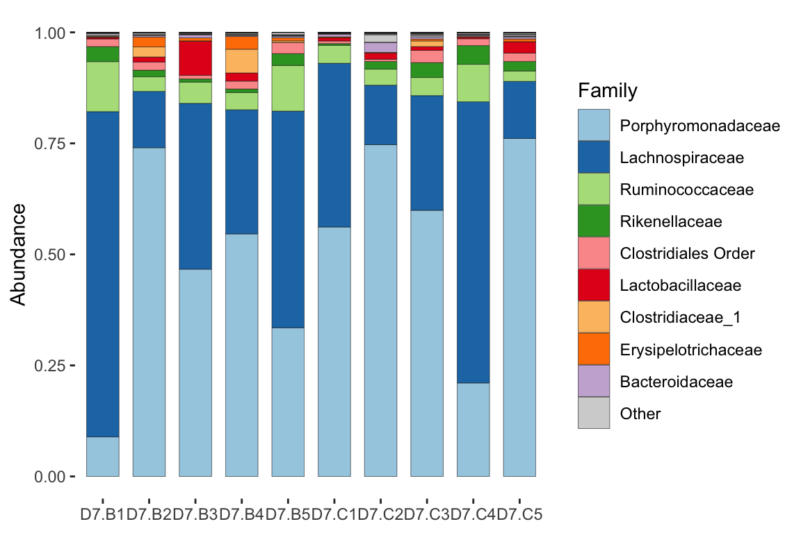
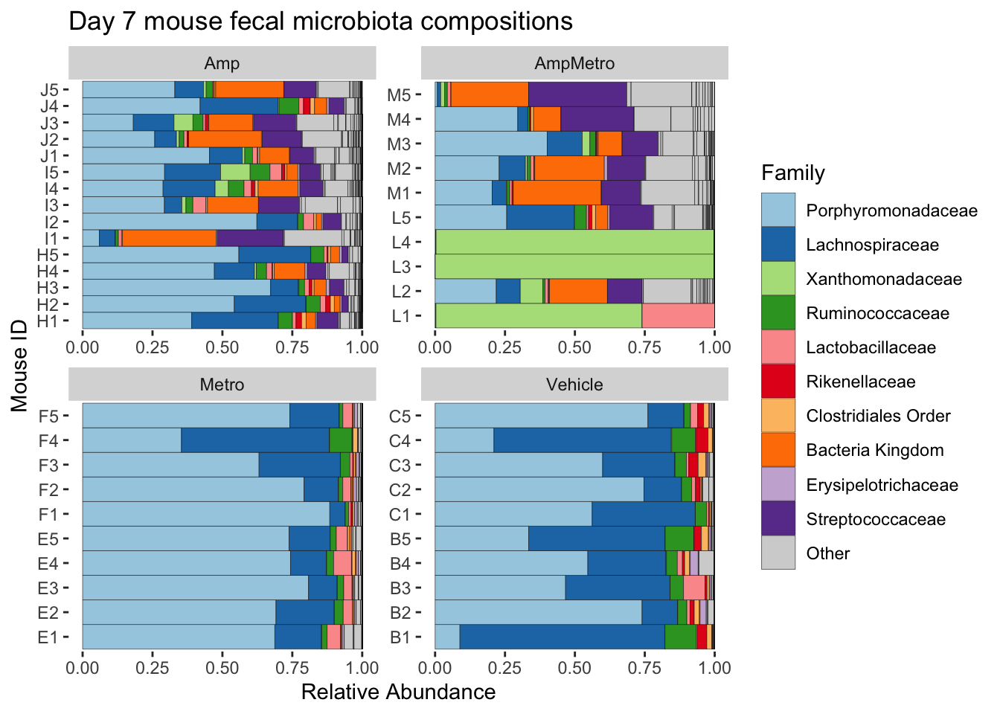
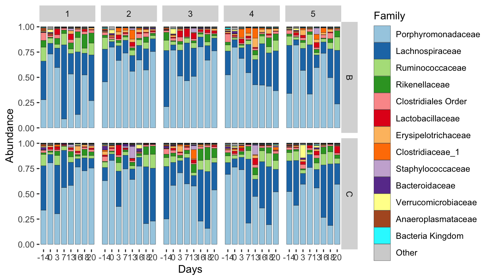
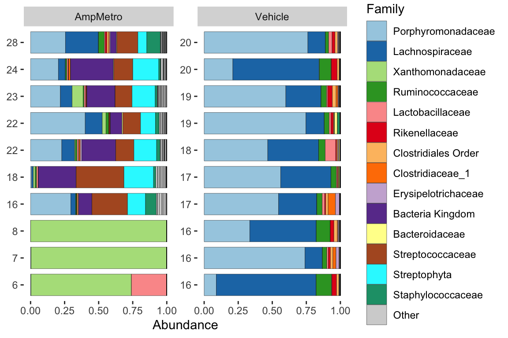
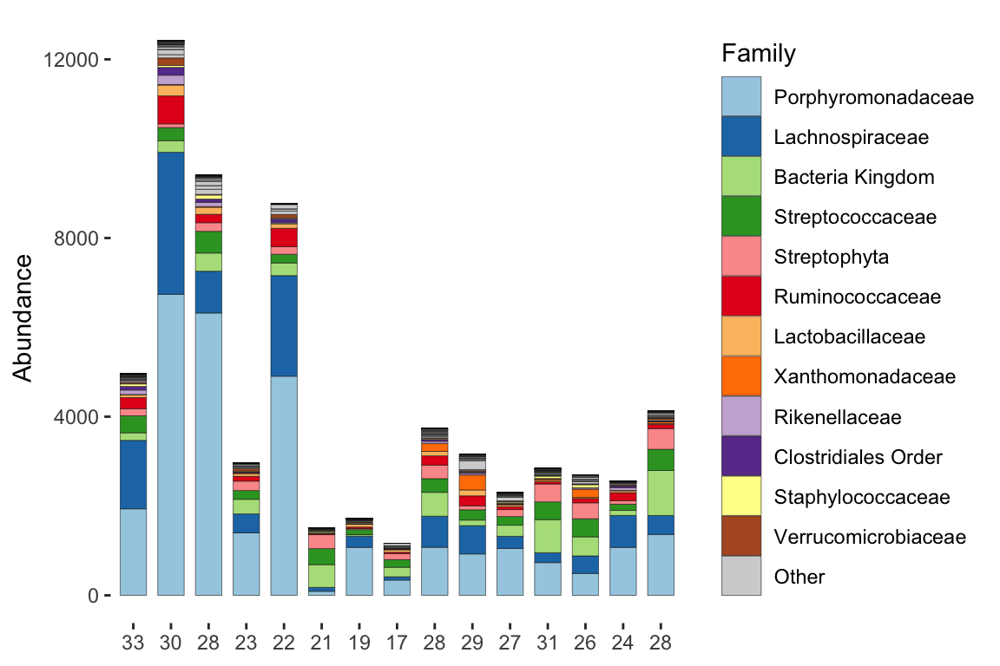

# Code blocks have a copy button in the top right -> -> -> -> ->
cat("- Copy and modify the code examples\n- Try to understand what it does, and play around!")- Copy and modify the code examples
- Try to understand what it does, and play around!Microbiome analysis with microViz
# Code blocks have a copy button in the top right -> -> -> -> ->
cat("- Copy and modify the code examples\n- Try to understand what it does, and play around!")- Copy and modify the code examples
- Try to understand what it does, and play around!Topics for part 1:
The microViz website has help pages for every function and more tutorials.
library(tidyverse)
library(phyloseq)
library(microViz)
library(shiny)# check data_directory is correct path on AMI to data folder
data_directory <- here::here("data")
mice <- readRDS(file.path(data_directory, "mice.rds"))data("shao19", package = "microViz")We will start with some processed microbiota data from the mouse study.
The study followed WNV infection after the following treatments:
Treatments were supplied ad libitum for 2 weeks prior to viral infection and maintained for 2 weeks post-infection.
mice is a phyloseq S4 object, containing a small subset of these data.
micephyloseq-class experiment-level object
otu_table() OTU Table: [ 591 taxa and 45 samples ]
sample_data() Sample Data: [ 45 samples by 8 sample variables ]
tax_table() Taxonomy Table: [ 591 taxa by 6 taxonomic ranks ]samdat_tbl()
sample_variables()
otu_get()
nsamples()
ntaxa()
sample_names()
taxa_names()
# don't forget you can use head() to truncate long output!View() function on each partView in your script!@ symbol to access the slots of S4 objects e.g. phyloseqmice@otu_table[1:5, 1:5]OTU Table: [5 taxa and 5 samples]
taxa are columns
ASV0001 ASV0002 ASV0003 ASV0004 ASV0005
D7.B1 709 33 1715 224 555
D7.B2 3896 22 7808 1201 4306
D7.B3 494 13 2657 4841 175
D7.B4 3147 80 4359 6269 3795
D7.B5 1663 11 3577 283 1814mice@sam_data %>% View()@NA values.tax_table(mice)[1:5, ]Taxonomy Table: [5 taxa by 6 taxonomic ranks]:
Kingdom Phylum Class Order
ASV0001 "Bacteria" "Bacteroidetes" "Bacteroidia" "Bacteroidales"
ASV0002 "Bacteria" "Proteobacteria" "Gammaproteobacteria" "Xanthomonadales"
ASV0003 "Bacteria" "Bacteroidetes" "Bacteroidia" "Bacteroidales"
ASV0004 "Bacteria" "Bacteroidetes" "Bacteroidia" "Bacteroidales"
ASV0005 "Bacteria" "Bacteroidetes" "Bacteroidia" "Bacteroidales"
Family Genus
ASV0001 "Porphyromonadaceae" NA
ASV0002 "Xanthomonadaceae" "Stenotrophomonas"
ASV0003 "Porphyromonadaceae" NA
ASV0004 "Porphyromonadaceae" NA
ASV0005 "Porphyromonadaceae" NA We need to fill those gaps! and we can do this with tax_fix()
tax_fix() copies info down from a higher rank, to fill the gaps.
First, let’s look at the taxonomy table interactively, with tax_fix_interactive()
# tax_fix_interactive(mice) # run this in the R Console tax_fix_interactive(mice) will open a new web browser tab.mice phyloseq object with this fix.mice <- tax_fix(mice, verbose = FALSE)# Hint: use tax_table and headmicroViz package, comp_barplot() function.# We can filter the samples like this, using the sample_data information
mice %>% ps_filter(treatment == "Vehicle") # similar to a dplyr filter!phyloseq-class experiment-level object
otu_table() OTU Table: [ 394 taxa and 10 samples ]
sample_data() Sample Data: [ 10 samples by 8 sample variables ]
tax_table() Taxonomy Table: [ 394 taxa by 6 taxonomic ranks ]# Use table()
mice@sam_data$treatment %>% table()mice %>%
ps_filter(treatment == "Vehicle") %>%
tax_names2rank("ASV") %>%
comp_barplot(
tax_level = "ASV", n_taxa = 12,
bar_width = 0.7, sample_order = "asis"
)tax_rename()mice %>%
ps_filter(treatment == "Vehicle") %>%
tax_rename(rank = "Family", pad_digits = 2) %>% # this changes the taxa_names
tax_names2rank("ASV") %>%
comp_barplot(
tax_level = "ASV", n_taxa = 12,
bar_width = 0.7, sample_order = "asis"
)When you see a function you are unfamiliar with, e.g. tax_names2rank(), look for documentation:
?tax_names2rank in the console, or click on the function and press the F1 key (F2 shows the source code!)mice %>%
tax_rename(rank = "Family", pad_digits = 2) %>%
taxa_names() %>%
head(12)mice %>%
ps_filter(treatment == "Vehicle") %>%
comp_barplot(
tax_level = "Family", n_taxa = 9,
sample_order = "asis", bar_width = 0.7,
merge_other = FALSE
) 
# Assign your plot to an R object
miceBarsD7koolaid <- mice %>%
ps_filter(treatment == "Vehicle") %>%
comp_barplot(
tax_level = "Family", n_taxa = 9,
sample_order = "asis", bar_width = 0.7,
merge_other = FALSE
)
# Write the plot to a file, with ggsave
ggsave(
filename = "mice-barchart-day7-WNV.png", device = "png",
plot = miceBarsD7koolaid, width = 6.5, height = 3.5, dpi = 200
)Be sure to carefully adjust the sizing and resolution of your plots for your paper or presentation!
facet_wrap() to our plot, to separate the treatment groups.mice %>%
comp_barplot(
tax_level = "Family", n_taxa = 10, merge_other = FALSE,
sample_order = "asis", label = "cage"
) +
facet_wrap(facets = vars(treatment), scales = "free") +
labs(
title = "Day 7 mouse fecal microbiota compositions",
x = "Mouse ID", y = "Relative Abundance"
) +
coord_flip() 
# coord_flip exchanges x and y axes, which can be more readableNot recommended for R or ggplot2 beginners.
This optional plotting exercise is more complex, and aims to exemplify the kind of complex manual arrangements enabled by comp_barplot.
# Additional packages needed
library(stringr)
library(patchwork)allMice <- readRDS(file.path(data_directory, "allMice.rds"))
allMice <- tax_fix(allMice, verbose = FALSE)
allMicephyloseq-class experiment-level object
otu_table() OTU Table: [ 3229 taxa and 520 samples ]
sample_data() Sample Data: [ 520 samples by 11 sample variables ]
tax_table() Taxonomy Table: [ 3229 taxa by 6 taxonomic ranks ]# Convert sample timings to a factor variable, for correct temporal ordering.
allMice <- allMice %>%
ps_mutate(Days = factor(
x = treatment_days,
levels = paste0("D", c(".14", "0", "3", "7", "13", "16", "18", "20")),
labels = c("-14", "0", "3", "7", "13", "16", "18", "20")
))
# Separate the cage numbers and letters to allow a grid layout.
allMice <- allMice %>%
ps_mutate(
cage_number = stringr::str_extract(cage, "[1-9]"),
cage_letter = stringr::str_extract(cage, "[A-Z]")
)
# Check the grid layout: plot the virus infected, vehicle control group
allMice %>%
ps_filter(virus == "WNV2000", treatment == "Vehicle") %>%
comp_barplot(
tax_level = "Family", n_taxa = 13, x = 'Days',
bar_width = 0.8, merge_other = FALSE
) +
facet_grid(cols = vars(cage_number), rows = vars(cage_letter))Registered S3 method overwritten by 'seriation':
method from
reorder.hclust vegan
# Create a list of identically themed and coloured plots with the group_by argument.
plotList <- allMice %>%
ps_mutate(group = paste(treatment, virus)) %>%
comp_barplot(tax_level = "Family", n_taxa = 13, x = "Days", group_by = "group")
# Arrange the WNV-exposed mice plots with patchwork, in 4 rows
plotsWNV <- wrap_plots(plotList[grep(x = names(plotList), pattern = "WNV2000")])
plotsWNV <- plotsWNV + plot_layout(guides = "collect", nrow = 4, heights = c(2,2,3,2))
# Add faceting to all the plots in the list, with patchwork's `&` operator
plotsWNV <- plotsWNV & facet_grid(cols = vars(cage_number), rows = vars(cage_letter))
# Write these plots to a large image file!
ggsave(plot = plotsWNV, filename = "WNVplots.png", height = 12, width = 8, dpi = 200)# More examples/tutorial of visualizing microbiome data using stacked barcharts can be found here: https://david-barnett.github.io/microViz/articles/web-only/compositions.html
Note: Bar charts often look better when you sort the samples by similarity.
How diverse is the bacterial microbiome of each sample?
diverse == healthy is not TRUE for all ecosystems (e.g. early infant gut microbiome)ps_calc_richness() computes the index for each sample and adds it to your sample_datamice %>%
ps_filter(treatment %in% c("Vehicle", "AmpMetro")) %>%
ps_calc_richness(rank = "Family", index = "observed", varname = "N_Families") %>%
ps_arrange(N_Families) %>%
comp_barplot(
tax_level = "Family", n_taxa = 14, label = "N_Families", bar_width = 0.8,
sample_order = "asis", merge_other = FALSE, facet_by = "treatment"
) +
coord_flip()
mice %>%
ps_filter(treatment %in% c("Vehicle", "AmpMetro")) %>%
ps_calc_diversity(rank = "Family", index = "shannon", varname = "Shannon_Family") %>%
ps_arrange(Shannon_Family) %>%
ps_mutate(Shannon = formatC(Shannon_Family, digits = 2, format = "f")) %>%
comp_barplot(
tax_level = "Family", n_taxa = 14, label = "Shannon", bar_width = 0.8,
sample_order = "asis", merge_other = FALSE, facet_by = "treatment"
) +
coord_flip()mice %>%
ps_filter(treatment %in% c("Vehicle", "AmpMetro")) %>%
ps_calc_diversity(rank = "Family", index = "shannon", exp = TRUE, varname = "Exp_Shannon") %>%
ps_arrange(Exp_Shannon) %>%
ps_mutate(Exp_Shannon = formatC(Exp_Shannon, digits = 2, format = "f")) %>%
comp_barplot(
tax_level = "Family", n_taxa = 14, label = "Exp_Shannon", bar_width = 0.8,
sample_order = "asis", merge_other = FALSE, facet_by = "treatment"
) +
coord_flip()miceShannonDf <- mice %>%
ps_calc_diversity(rank = "Family", index = "shannon", exp = TRUE, varname = "Exp_Shannon") %>%
samdat_tbl()miceShannonDf %>%
ggplot(aes(y = Exp_Shannon, x = treatment, color = treatment)) +
geom_boxplot(alpha = 0.5, width = 0.5) +
geom_point(position = position_jitter(width = 0.1), alpha = 0.5, size = 2) +
scale_color_brewer(palette = "Set1", guide = NULL) +
labs(y = "Effective Shannon diversity (Family)", x = NULL) +
theme_bw()
# A simple statistical test supports this assertion
miceShannonDf %>%
mutate(Ampicillin = if_else(grepl(pattern = "Amp", x = treatment), 1, 0)) %>%
wilcox.test(formula = Exp_Shannon ~ Ampicillin, data = .)
Wilcoxon rank sum exact test
data: Exp_Shannon by Ampicillin
W = 59, p-value = 2.919e-06
alternative hypothesis: true location shift is not equal to 0lm()allMice %>%
ps_filter(treatment_days == "D7") %>%
ps_calc_diversity(rank = "Family", index = "shannon", exp = TRUE, varname = "Exp_Shannon") %>%
samdat_tbl() %>%
mutate(Ampicillin = if_else(grepl(pattern = "Amp", x = treatment), 1, 0)) %>%
lm(formula = Exp_Shannon ~ Ampicillin + virus, data = .) %>%
summary()
Call:
lm(formula = Exp_Shannon ~ Ampicillin + virus, data = .)
Residuals:
Min 1Q Median 3Q Max
-5.0571 -0.5624 0.1993 1.0744 4.2906
Coefficients:
Estimate Std. Error t value Pr(>|t|)
(Intercept) 1.9133 0.4977 3.844 0.000287 ***
Ampicillin 2.9685 0.4844 6.128 6.76e-08 ***
virusWNV2000 1.1967 0.5233 2.287 0.025624 *
---
Signif. codes: 0 '***' 0.001 '**' 0.01 '*' 0.05 '.' 0.1 ' ' 1
Residual standard error: 1.944 on 62 degrees of freedom
Multiple R-squared: 0.417, Adjusted R-squared: 0.3982
F-statistic: 22.17 on 2 and 62 DF, p-value: 5.454e-08Final activities for part 1:
mice %>%
ps_filter(treatment == "Amp") %>%
ps_calc_richness(rank = "Family", index = "observed", varname = "N families") %>%
comp_barplot(
tax_level = "Family", n_taxa = 12, label = "N families", bar_width = 0.7,
sample_order = "asis", merge_other = FALSE, tax_transform_for_plot = "identity"
)
mice %>%
tax_names2rank("ASV") %>%
ps_calc_richness(rank = "ASV", index = "observed", varname = "ASVs") %>%
ps_mutate(readcount = sample_sums(mice)) %>%
samdat_tbl() %>%
ggplot(aes(readcount, ASVs)) +
geom_point(alpha = 0.4, size = 2.5) +
theme_bw(14)
What to do?
breakaway by Amy Willis and team. https://www.frontiersin.org/articles/10.3389/fmicb.2019.02407/fullThis is an extension exercise, for anyone who is moving very quickly.
Inflammatory Bowel Disease study
ibd <- corncob::ibd_phylo %>%
tax_mutate(Species = NULL) %>% # ibd_phylo Species column was blank -> deleted
ps_mutate(disease = ibd == "ibd", ibd = NULL) # adds disease state indicator variableibd is another phyloseq object containing 16S rRNA gene amplicon sequencing datamice datasetibdphyloseq-class experiment-level object
otu_table() OTU Table: [ 36349 taxa and 91 samples ]
sample_data() Sample Data: [ 91 samples by 15 sample variables ]
tax_table() Taxonomy Table: [ 36349 taxa by 6 taxonomic ranks ]##session_info records your package versions etc. This is useful for debugging / reproducing analysis.
devtools::session_info()─ Session info ───────────────────────────────────────────────────────────────
setting value
version R version 4.3.0 (2023-04-21)
os macOS Ventura 13.3.1
system aarch64, darwin20
ui X11
language (EN)
collate en_US.UTF-8
ctype en_US.UTF-8
tz Europe/Prague
date 2023-05-23
pandoc 3.0.1 @ /opt/homebrew/bin/ (via rmarkdown)
─ Packages ───────────────────────────────────────────────────────────────────
package * version date (UTC) lib source
ade4 1.7-22 2023-02-06 [1] CRAN (R 4.3.0)
ape 5.7-1 2023-03-13 [1] CRAN (R 4.3.0)
Biobase 2.60.0 2023-04-25 [1] RSPM (R 4.3.0)
BiocGenerics 0.46.0 2023-04-25 [1] RSPM (R 4.3.0)
biomformat 1.28.0 2023-04-25 [1] RSPM (R 4.3.0)
Biostrings 2.68.0 2023-04-25 [1] RSPM (R 4.3.0)
bitops 1.0-7 2021-04-24 [1] CRAN (R 4.3.0)
ca 0.71.1 2020-01-24 [1] CRAN (R 4.3.0)
cachem 1.0.8 2023-05-01 [1] CRAN (R 4.3.0)
callr 3.7.3 2022-11-02 [1] CRAN (R 4.3.0)
cli 3.6.1 2023-03-23 [1] CRAN (R 4.3.0)
cluster 2.1.4 2022-08-22 [1] CRAN (R 4.3.0)
codetools 0.2-19 2023-02-01 [1] CRAN (R 4.3.0)
colorspace 2.1-0 2023-01-23 [1] CRAN (R 4.3.0)
corncob 0.3.1 2022-12-05 [1] CRAN (R 4.3.0)
crayon 1.5.2 2022-09-29 [1] CRAN (R 4.3.0)
data.table 1.14.8 2023-02-17 [1] CRAN (R 4.3.0)
devtools 2.4.5 2022-10-11 [1] CRAN (R 4.3.0)
digest 0.6.31 2022-12-11 [1] CRAN (R 4.3.0)
dplyr * 1.1.2 2023-04-20 [1] CRAN (R 4.3.0)
ellipsis 0.3.2 2021-04-29 [1] CRAN (R 4.3.0)
evaluate 0.21 2023-05-05 [1] CRAN (R 4.3.0)
fansi 1.0.4 2023-01-22 [1] CRAN (R 4.3.0)
farver 2.1.1 2022-07-06 [1] CRAN (R 4.3.0)
fastmap 1.1.1 2023-02-24 [1] CRAN (R 4.3.0)
forcats * 1.0.0 2023-01-29 [1] CRAN (R 4.3.0)
foreach 1.5.2 2022-02-02 [1] CRAN (R 4.3.0)
fs 1.6.2 2023-04-25 [1] CRAN (R 4.3.0)
generics 0.1.3 2022-07-05 [1] CRAN (R 4.3.0)
GenomeInfoDb 1.36.0 2023-04-25 [1] RSPM (R 4.3.0)
GenomeInfoDbData 1.2.10 2023-05-12 [1] RSPM (R 4.3.0)
ggplot2 * 3.4.2 2023-04-03 [1] CRAN (R 4.3.0)
glue 1.6.2 2022-02-24 [1] CRAN (R 4.3.0)
gtable 0.3.3 2023-03-21 [1] CRAN (R 4.3.0)
here 1.0.1 2020-12-13 [1] CRAN (R 4.3.0)
hms 1.1.3 2023-03-21 [1] CRAN (R 4.3.0)
htmltools 0.5.5 2023-03-23 [1] CRAN (R 4.3.0)
htmlwidgets 1.6.2 2023-03-17 [1] CRAN (R 4.3.0)
httpuv 1.6.9 2023-02-14 [1] CRAN (R 4.3.0)
igraph 1.4.2 2023-04-07 [1] CRAN (R 4.3.0)
IRanges 2.34.0 2023-04-25 [1] RSPM (R 4.3.0)
iterators 1.0.14 2022-02-05 [1] CRAN (R 4.3.0)
jsonlite 1.8.4 2022-12-06 [1] CRAN (R 4.3.0)
knitr 1.42 2023-01-25 [1] CRAN (R 4.3.0)
labeling 0.4.2 2020-10-20 [1] CRAN (R 4.3.0)
later 1.3.1 2023-05-02 [1] CRAN (R 4.3.0)
lattice 0.21-8 2023-04-05 [1] CRAN (R 4.3.0)
lifecycle 1.0.3 2022-10-07 [1] CRAN (R 4.3.0)
lubridate * 1.9.2 2023-02-10 [1] CRAN (R 4.3.0)
magrittr 2.0.3 2022-03-30 [1] CRAN (R 4.3.0)
MASS 7.3-60 2023-05-04 [1] CRAN (R 4.3.0)
Matrix 1.5-4 2023-04-04 [1] CRAN (R 4.3.0)
memoise 2.0.1 2021-11-26 [1] CRAN (R 4.3.0)
mgcv 1.8-42 2023-03-02 [1] CRAN (R 4.3.0)
microbiome 1.22.0 2023-04-25 [1] RSPM (R 4.3.0)
microViz * 0.10.10 2023-05-19 [1] Github (david-barnett/microViz@2a021f2)
mime 0.12 2021-09-28 [1] CRAN (R 4.3.0)
miniUI 0.1.1.1 2018-05-18 [1] CRAN (R 4.3.0)
multtest 2.56.0 2023-04-25 [1] RSPM (R 4.3.0)
munsell 0.5.0 2018-06-12 [1] CRAN (R 4.3.0)
nlme 3.1-162 2023-01-31 [1] CRAN (R 4.3.0)
patchwork * 1.1.2 2022-08-19 [1] CRAN (R 4.3.0)
permute 0.9-7 2022-01-27 [1] CRAN (R 4.3.0)
phyloseq * 1.44.0 2023-04-25 [1] RSPM (R 4.3.0)
pillar 1.9.0 2023-03-22 [1] CRAN (R 4.3.0)
pkgbuild 1.4.0 2022-11-27 [1] CRAN (R 4.3.0)
pkgconfig 2.0.3 2019-09-22 [1] CRAN (R 4.3.0)
pkgload 1.3.2 2022-11-16 [1] CRAN (R 4.3.0)
plyr 1.8.8 2022-11-11 [1] CRAN (R 4.3.0)
prettyunits 1.1.1 2020-01-24 [1] CRAN (R 4.3.0)
processx 3.8.1 2023-04-18 [1] CRAN (R 4.3.0)
profvis 0.3.8 2023-05-02 [1] CRAN (R 4.3.0)
promises 1.2.0.1 2021-02-11 [1] CRAN (R 4.3.0)
ps 1.7.5 2023-04-18 [1] CRAN (R 4.3.0)
purrr * 1.0.1 2023-01-10 [1] CRAN (R 4.3.0)
R6 2.5.1 2021-08-19 [1] CRAN (R 4.3.0)
ragg 1.2.5 2023-01-12 [1] CRAN (R 4.3.0)
RColorBrewer 1.1-3 2022-04-03 [1] CRAN (R 4.3.0)
Rcpp 1.0.10 2023-01-22 [1] CRAN (R 4.3.0)
RCurl 1.98-1.12 2023-03-27 [1] CRAN (R 4.3.0)
readr * 2.1.4 2023-02-10 [1] CRAN (R 4.3.0)
registry 0.5-1 2019-03-05 [1] CRAN (R 4.3.0)
remotes 2.4.2 2021-11-30 [1] CRAN (R 4.3.0)
reshape2 1.4.4 2020-04-09 [1] CRAN (R 4.3.0)
rhdf5 2.44.0 2023-04-25 [1] RSPM (R 4.3.0)
rhdf5filters 1.12.1 2023-04-30 [1] RSPM (R 4.3.0)
Rhdf5lib 1.22.0 2023-04-25 [1] RSPM (R 4.3.0)
rlang 1.1.1 2023-04-28 [1] CRAN (R 4.3.0)
rmarkdown 2.21 2023-03-26 [1] CRAN (R 4.3.0)
rprojroot 2.0.3 2022-04-02 [1] CRAN (R 4.3.0)
rstudioapi 0.14 2022-08-22 [1] CRAN (R 4.3.0)
Rtsne 0.16 2022-04-17 [1] CRAN (R 4.3.0)
S4Vectors 0.38.1 2023-05-02 [1] RSPM (R 4.3.0)
scales 1.2.1 2022-08-20 [1] CRAN (R 4.3.0)
seriation 1.4.2 2023-03-08 [1] CRAN (R 4.3.0)
sessioninfo 1.2.2 2021-12-06 [1] CRAN (R 4.3.0)
shiny * 1.7.4 2022-12-15 [1] CRAN (R 4.3.0)
stringi 1.7.12 2023-01-11 [1] CRAN (R 4.3.0)
stringr * 1.5.0 2022-12-02 [1] CRAN (R 4.3.0)
survival 3.5-5 2023-03-12 [1] CRAN (R 4.3.0)
systemfonts 1.0.4 2022-02-11 [1] CRAN (R 4.3.0)
textshaping 0.3.6 2021-10-13 [1] CRAN (R 4.3.0)
tibble * 3.2.1 2023-03-20 [1] CRAN (R 4.3.0)
tidyr * 1.3.0 2023-01-24 [1] CRAN (R 4.3.0)
tidyselect 1.2.0 2022-10-10 [1] CRAN (R 4.3.0)
tidyverse * 2.0.0 2023-02-22 [1] CRAN (R 4.3.0)
timechange 0.2.0 2023-01-11 [1] CRAN (R 4.3.0)
TSP 1.2-4 2023-04-04 [1] CRAN (R 4.3.0)
tzdb 0.3.0 2022-03-28 [1] CRAN (R 4.3.0)
urlchecker 1.0.1 2021-11-30 [1] CRAN (R 4.3.0)
usethis 2.1.6 2022-05-25 [1] CRAN (R 4.3.0)
utf8 1.2.3 2023-01-31 [1] CRAN (R 4.3.0)
vctrs 0.6.2 2023-04-19 [1] CRAN (R 4.3.0)
vegan 2.6-4 2022-10-11 [1] CRAN (R 4.3.0)
withr 2.5.0 2022-03-03 [1] CRAN (R 4.3.0)
xfun 0.39 2023-04-20 [1] CRAN (R 4.3.0)
xtable 1.8-4 2019-04-21 [1] CRAN (R 4.3.0)
XVector 0.40.0 2023-04-25 [1] RSPM (R 4.3.0)
yaml 2.3.7 2023-01-23 [1] CRAN (R 4.3.0)
zlibbioc 1.46.0 2023-04-25 [1] RSPM (R 4.3.0)
[1] /Library/Frameworks/R.framework/Versions/4.3-arm64/Resources/library
──────────────────────────────────────────────────────────────────────────────